Kolimacja teleskopu systemu Newtona za pomocą kolimatora z otworkiem
Kolimacja teleskopu / Justowanie - ma na celu prawidłowe ustawienie względem siebie: zwierciadeł teleskopu, tuby teleskopu, wyciągu okularowego.
Opiszę tu kolimację, którą wymyśliłem dawno temu, jak się potem okazało, podobnie kolimowano już wcześniej na zachodzie, wymyśliłem więc już wymyślone, ale jak z doświadczenia wiemy, niezależne odkrycia, tego samego rozwiązania, na te same potrzeby, w różnych zakątkach świata, to nic nowego :) Kolimacji dokonujemy za pomocą kolimatora z otworkiem i podkładką, co przy zastosowaniu proponowanych przeze mnie technik, daje niezłe efekty. W procesie kolimacji mamy sporą kontrolę nad tym co się dzieje, ponieważ dokładnie widzimy położenie zwierciadeł, w czym niniejsza metoda posiada przewagę nad kolimatorem laserowym. Łatwo skolimować teleskop laserem tak, że teoretycznie wszystko będzie należycie, jednak zwierciadło wtórne będzie ustawione całkowicie nieprawidłowo, lub z winy koślawego lasera, albo jego nieidealnego osadzenia w wyciągu, ogólnie będzie klapa, przy mojej kolimacji, wykonanej prawidłowo, nie ma takiej możliwości. Zauważcie także, że obecnie do kolimatorów laserowych, właśnie z wyżej przywołanych powodów, dodaje się do kompletu kolimator z otworkiem :) .
Na koniec przydługiego wstępu dodam, iż kolimacji lepiej uczyć się na dużym teleskopie, bo w nim dostęp jest łatwiejszy i wszystko jest bardziej namacalne, reakcje optyki są wyrazistsze, a efekty naszych poczynań bardziej jednoznaczne.
Niniejszy opis (w jeszcze prymitywnej formie) swoją premierę miał na Forum Astro4u w 2005r, od tego czasu jest nieustannie rozwijany i ulepszany.
Będę się powtarzał, do znudzenia, nie będzie stylistycznie, ale stosowanie skrótów myślowych można wplatać, gdy się omawia temat z kimś biegłym w dziedzinie, a ja chcę mieć pewność, że przerabiając tutorial, zrozumiecie dokładnie, co mam na myśli :)
KOLIMACJA TELESKOPU - uproszczona - dla zupełnie początkujących
Będzie to kolimacja uproszczona, ma ona na celu sprowadzenie teleskopu to poziomu przyzwoitego, na początek to wystarczy, nie jest celowe kazać Wam od razu rozbierać teleskop i brnąć w zadania przekraczające Wasze możliwości. Z kolimacją trzeba się oswoić etapami, aby sukcesywnie wnikać coraz głębiej w jej niuanse.
Dział składa się z kilku tematów, kliknij stosowną nazwę, aby zostać przeniesionym do interesującej Cię sekcji.
Do kolimacji użyjemy bardzo prostego oraz darmowego kolimatora, który można wykonać we własnym zakresie, a jest to banalnie proste.
Wersja Old - Mark I - Wystarczy nam pudełko po filmie fotograficznym, jeśli nie posiadamy, można iść do zakładu foto i pozyskać takowe. Jest ich kilka rodzajów, ale nie wszystkie pasują do wyciągu 1,25″, potrzebne jest nam to gładkie o mniejszej średnicy. Wycinamy w takim pudełku denko a w wieczku (dokładnie i starannie na samym środku) robimy mały otworek 1-3mm.
1-1
Niestety, znak czasu, klisze odeszły do lamusa, coraz trudniej pozyskać ich pudełka, dlatego...
Wersja New - Mark II - Wystarczy nam Hortex sok w butelce 1 litr, nas interesuje jego zakrętka. Szczęśliwie się składa, iż jej wewnętrzny pierścień idealnie pasuje do tulei rozmiaru 1,25", wystarczy więc taką zakrętkę uzbroić w otworek i podkładkę, a następnie wcisnąć na pozyskaną z okularu 1.25" tuleję i mamy gotowy kolimator :)
Wiele produktów, głównie mlecznych, posiada zakrętkę bardzo zbliżoną rozmiarem do Hortex-owej, niby są tylko tyci ciaśniejsze ale to już wystarczy by nie wchodziły na tuleję 1.25". Hortex-ową wypróbowałem na przeróżnych modelach, drogich i tandetnych, leży jak należy, a jak wiecie, tuleje potrafią różnić się od siebie rozmiarem mimo standaryzacji.
Możemy zakrętkę pozostawić w pierwotnej formie, ale posiadając dobre nożyczki i odrobinę chęci (obcinając zewnętrzny pierścień) przerobić ją w obiekt prezentowany poniżej.
1-2
Swoją drogą, fajne są z tego minimalistyczne zatyczki do okularów 1,25"
Można też na kolimator przerobić stary okular, wydrukować go na drukarce 3D, kupić, tę kwestię pozostawiam już Waszej operatywności :)
Niezależnie od wersji kolimatora, od spodu wieczka (najlepiej klejem typu Butapren lub silikonem) przyklejamy podkładkę, błyszczącą, ale porowatą, bo taka działa jak odblask, łabie światło z różnych stron. Podkładka gładka i równa jak zwierciadło odbija tylko ukierunkowane światło, puszcza nam zajączki, ale tylko wtedy, gdy jest idealnie zgrana z naszym okiem i źródłem światła, co sprawia, że w 99% przypadków będzie dla nas ciemna. To coś jak szybka od zegarka, tylko idealne wycelowanie światłem w oczy razi, pod innymi kątami, nic nam nie błyska.
Kolor podkładki nie ma znaczenia :) ale rozmiar ma, o czym przeczytasz dokładniej TU poniżej.
Kolimator tego typu instalujemy w wyciągu okularowym tak jak okular obserwacyjny.
Do kolimacji, na środku zwierciadła głównego, będzie nam niezbędny znacznik-naklejka, okrągła - • lub kołowa - O, jeśli nie posiadamy takiej na zwierciadle umieszczonej fabrycznie, należy ją przykleić samodzielnie. W tym celu, niestety, musimy wyciągnąć zwierciadło główne z tuby teleskopu. .
Ja znaczniki pozyskuję z blankiecików naklejek cyferkowych ze sklepu papierniczego. Można albo zaokrąglić ZERO, albo wyciąć kółko od początku, z obrzeża blankieciku. Rzeczone naklejki, mimo częstego mycia optyki, trzymają się znakomicie. Znacznik staramy się umieścić jak najdokładniej na samym środku zwierciadła, uważając jednocześnie, aby nie dotknąć, nie zabrudzić, nie uszkodzić, w jakiś sposób powłoki. .
Znacznik umieszczamy raz i pozostawiamy go tam na stałe, ponieważ będzie potrzebny do następnych kolimacji. Nie wpływa on negatywnie na obraz, ponieważ sam środek zwierciadła i tak nie bierze udziału w tworzeniu obrazu, ponieważ zasłania go zwierciadło wtórne. .
Do kolimacji kolimatorem otworkowym wystarczy znacznik kołowy, do kolimacji kolimatorem laserowym, niezbędny jest znacznik pierścieniowy, z uwagi na fakt konieczności odbicia wiązki lasera od zwierciadła głównego w otworze znacznika.
Jednak zanim podejmiesz działania, przeczytaj jeszcze opis poniżej.
2-1 Znacznik kołowy
2-2 Znacznik pierścieniowy
-- Podkładka w kolimatorze i znacznik na zwierciadle głównym --
Opiszę trochę szerzej zależności tych dwóch elementów. Grafika będzie w dużej skali, aby było Wam łatwiej dostrzec to, o czym piszę.
Rozmiar podkładki wymusza na nas rodzaj i rozmiar znacznika na zwierciadle głównym. W przypadku gdy znacznik na zwierciadle głównym dopiero tworzymy i przyklejamy, możemy sobie pozwolić na dopasowanie tych dwóch elementów samodzielnie.
Poniżej wykaz co w analizie będzie czym.
2-3
Poniżej analiza zagadnienia.
Przeanalizujemy dwa rozmiary pierścienia odblaskowego w kolimatorze oraz dwa typy markerów na zwierciadle głównym. Jeden marker jest kołowy a drugi marker jest pierścieniowy.
Opisane tu zagadnienie zawiera moje doświadczenie w tym zakresie, nie zawsze to, co wydaje się na grafice nie do końca przekonujące, w teleskopie, widziane z oddali, szybko Was utwierdzi w wygłoszonych poniżej tezach. :)
Jak widać poniżej, zestawienie podkładki A i znacznika 1 (A+1) nie jest szczęśliwym połączeniem, z uwagi na fakt, iż w procesie kolimacji przy mniejszych niedokładnościach trudno ocenić ich centryczność. Dużo lepszym połączeniem jest, jak widać połączenie podkładki B i znacznika 1 (B+1) ładnie widać ich wzajemne przesunięcia oraz prawidłowe zgranie (B+1 centr).
Innym niefortunnym zestawieniem jest podkładka A oraz znacznik 2 (A+2) ciężko ocenić poprawność kolimacji, obiekty zlewają się ze sobą, w tym przypadku warto zastosować większą podkładkę, czyli B (B+2). Widać jak ładnie podkładka B i znacznik 2 zgrywają się w łatwą do identyfikacji poprawną kolimację (B+2 centr)
Mam nadzieję, że jest już jasne, na czym polega zagadnienie doboru tego duetu i czym się kierować :)
W czasie kolimacji teleskop można skierować na dzienne jasne niebo, lub żarówkę pod sufitem, ale najlepsze efekty, da świecenie do tuby teleskopu jasną świetlówką w miejscu wskazanym na poniższym obrazku. Świetlówka mocno oświetla zwierciadło główne, a przy okazji od wewnątrz kolimator, co zapewnia nam pełną kontrolę nad tym, co się dzieje.
UWAGA - Ja używam do tego celu świetlówki energooszczędnej spiralnej (w osłonie jak poniżej), gdyż daje najkorzystniejsze oświetlenie, wiedzieć jednak należy, iż stłuczenie takowej (zwłaszcza włączonej) jest bardzo niebezpieczne z powodu parów rtęci. Taki pokój należy natychmiast wietrzyć i opuścić a do zebrania szczątków takowej UE zaleca specjalny zestaw, także ochronny (to nie żart). Problem dotyczy wszystkich świetlówek, też tych pod Waszym sufitem i w lampkach. Dodatkowa wada takiej opcji to konieczność zasilania 230 v, co w przypadku prac polowych jest dodatkowym utrudnieniem. Sugeruję więc albo zastosowanie innego źródła światła świecącego na wprost oraz na boki lub ostrożne obchodzenie się z wyżej opisanym.
Cela zwierciadła głównego (mocowanie zwierciadła głównego)
Budowa teleskopu wymaga, aby istniała możliwość niewielkiego przechylania zwierciadła głównego w różne strony, w tym celu, mocowanie zwierciadła głównego (Cela) składa się z dwóch niezależnych elementów, jednego nieruchomego przytwierdzonego do tuby teleskopu i drugiego ruchomego, do którego przymocowane jest zwierciadło główne. Oba elementy spajają ze sobą trzy punkty o regulowanej odległości, przez co, wydłużając je, lub skracając, element ruchomy Celi (a wraz z nim zwierciadło główne teleskopu) można dowolnie przechylać względem elementu nieruchomego.
Dla ułatwienia wyobraźmy sobie taboret na trzech nogach, gdzie siedzisko będzie zwierciadłem, a każda noga miejscem podparcia, regulując długość nóg, możemy pochylać taboret w różne strony.
Cele są różnej budowy, od pełnych i niepełnych kręgów, po trójramienne lub trójkątne ramy, ale wszystkie one mają pewne cechy wspólne, a mianowicie, sposób obsługi rzeczonych trzech regulowanych punktów podparcia, i abyś wiedział jak się nimi posługiwać, przygotowałem poniższy opis podstawowych wersji.
Wersja 1. Cela regulowana trzema śrubami z nawleczonymi na nie sprężynami odpychającymi.
Ten rodzaj celi jest najprzyjemniejszy do kolimacji, ale nie daje gwarancji bezwględnej sztywności, dlatego słabo sprawdzi się przy większych zwierciadłach i w astrofotografii. Gdy tylko tuba teleskopu nie znajduje się w pozycji pionowej, część ruchoma celi pod wpływem ciężaru zwierciadła, potrafi "opadać" na śrubach.
Kolimacja jest prosta, bo polega na kręceniu jedynie trzema śrubami, a ich wkręcanie, lub wykręcanie, przechyla nam celę ze zwierciadłem w żądanym kierunku. Mocne sprężyny nawleczone na śruby cały czas kasują nam powstałe luzy przy luzowaniu śrub, bądź poddają się, gdy przestrzeń w wyniku dokręcania się zmniejsza.
4-1
Wersja 2. Cela regulowana trzema parami śrub, w każdej parze śruba ciągnąca i śruba kontrująca, łącznie w celi sześć śrub.
Ten rodzaj celi jest trudny w kolimacji, ale daje gwarancję bezwzględnej sztywności, dlatego dobrze sprawdzi się przy większych zwierciadłach i w astrofotografii.
Trzy pary śrub, w każdej parze jedna dociąga ruchomą część celi do nieruchomej umocowanej do tuby, a druga odpycha (kontruje) kasując powstały luz.
Kolimacja jest wymagająca, bo polega na umiejętnym kręceniu sześcioma śrubami, a ich wkręcanie się, lub wykręcanie, przechyla nam celę ze zwierciadłem w żądanym kierunku. Niestety, aby odchylić mocniej zwierciadło, trzeba najpierw poluzować śrubę ściągającą a powstały luz, skasować dokręcając śrubę kontrującą. Aby przyciągnąć zwierciadło bliżej, trzeba najpierw odkręcić/cofnąć kontrę a dopiero potem można przyciągać śrubą ściągającą. Gdybyśmy nie poluzowali kontry, a ściągali śrubą ściągającą, zerwalibyśmy w niej gwint, bo cela zaparta na śrubie kontrującej nie mając luzu, nie miałaby się gdzie przemieścić.
Poniższa grafika prezentuje dwie typowe konfiguracje dla tego rodzaju mocowania.
4-2
4-3
Animacja przedstawia pracę pary śrub celi zwierciadła głównego, ściągającej (u góry) oraz kontrującej (na dole).
4-4
Wersja 3. Cela regulowana trzema śrubami z nawleczonymi na nie sprężynami odpychającymi, ale usztywniana znajdującymi się pomiędzy nimi śrubami kontrującymi.
Trzy śruby ściągające ze sprężynami co 120° i naprzemiennie między nimi trzy śruby kontrujące co 120°, co łącznie daje punkty co 60°. .
Ten rodzaj celi jest ciężki do kolimacji, daje jednak średnią wartość sztywności, dlatego jakoś sprawdzi się przy większych zwierciadłach i w astrofotografii. Ale kolimacja... koszmar.
4-5
Kolimacja jest trudna i wstępnie polega na cofnięciu kontr (patrz grafika poniżej), potem kręceniu trzema śrubami ze sprężynami, to akurat, by nie było takie złe, gdyby nie fakt, że przy większych zwierciadłach, sprężyny nie mają siły na wypchnięcie części ruchomej celi, co niekiedy, przy luzowaniu, kończy się koniecznością wypychania dodatkowo części ruchomej kciukami! Gdy już się jakoś uda ustawić nam zwierciadło główne należycie, przychodzi pora, aby je zaklinować śrubami kontrującymi, a wtedy, z winy małej sztywności celi, i faktu, iż śruby kontrujące są daleko od ściągających (naprzemienne pod kątem 60 stopni), gdy zaczniemy je dokręcać, całą naszą dotychczasową kolimację szlag trafia... z powodu deformowania się celi.
Jak sobie z tą celą poradzić ?
Najpierw, jak już pisałem, cofamy śruby kontrujące jak poniżej, wtedy śrubami ze sprężynami kolimujemy zwierciadło główne na środkowy otwór pająka zwierciadła wtórnego (oczywiście po odkręceniu zwierciadła wtórnego z mocowaniem od pająka)
4-6
A gdy już uzyskamy idealną pozycję zwierciadła głównego, delikatnie podjeżdżamy śrubami kontrującymi do celi, aż jej delikatnie dotkną, jak poniżej
4-7
Potem dokręcamy każdą kontrę o pół obrotu, patrząc przez środkowy otwór pająka, ile nam uciekła kolimacja zwierciadła głównego, by potem już z wyczuciem dokręcać tylko te kontry, które dają nam pożądany efekt, celem odzyskania tego, co uciekło. Z uwagi na fakt, iż na tym etapie (w tej nieszczęśliwej celi) reakcje zwierciadła głównego są absolutnie nieprzewidywalne, najlepiej robić to we dwoje. Jedno patrzy przez otwór i wydaje komendy drugiemu (ta kontra... inna kontra... jeszcze tyci ... stop... wrócić to, co poszło przed chwilą) tak jest dużo prościej. Tak już skolimowane zwierciadło główne (w tym typie celi) lepiej, aby w toku użytkowania teleskopu nie było już w ogóle ruszane, chyba że macie ochotę... znowu wykręcać zwierciadło wtórne i powtórzyć zabawę w kolimację we dwoje od nowa :)
No dobra, powiecie, pochylamy tym zwierciadłem we wszystkie strony, ale w jakim to celu?
A no w takim to celu, iż zwierciadło główne teleskopu posiada niewidoczną dla nas wychodzącą z jego środka oś optyczną. Naszym zadaniem w procesie kolimacji jest ową osią trafić do otworu kolimatora umieszczonego w wyciągu okularowym.
5-1
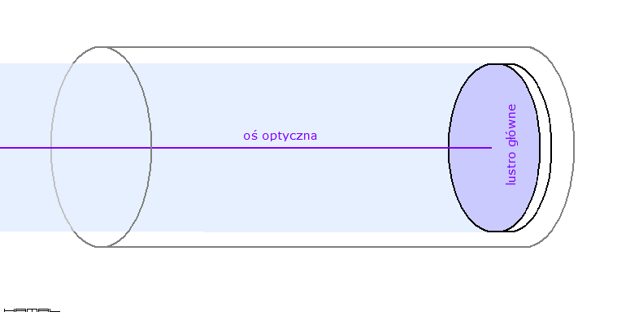
Celujemy tą osią optyczną niczym laserem w cel, a że jedna animacja warta tysiąca słów, patrz poniżej. Kolimując celą zwierciadła głównego powodujemy jego przechylanie się na różne strony, naszym zadaniem jest trafić jego osią optyczną (fioletowa kreska wychodząca ze środka zwierciadła) w odpowiednie miejsce zwierciadła wtórnego, aby ostatecznie trafić w otwór kolimatora.
W teleskopie zwierciadło główne generuje obraz na prost, czyli w stronę wlotu tubu teleskopu, ale my go tam nie chcemy, my potrzebujemy ów obraz z boku, w wyciągu okularowym, i aby to osiągnąć, musimy za pomocą drugiego dodatkowego płaskiego zwierciadła ten obraz tam skierować. Zwierciadło wtórne, bo tak się owe dodatkowe płaskie zwierciadło w teleskopie systemu Newtona zowie, to zadanie nam realizuje, ale i ono musi u wlotu tuby zostać jakoś zamontowane, i do tego celu służy tak zwany PAJĄK. Najpowszechniejsze są pająki trójramienne i czteroramienne, tak czy inaczej, stanowią one miejsce umocowania zwierciadła wtórnego, przy okazji swoją budową starając się zasłaniać jak najmniej wlotu tuby. Ale i to mocowanie, podobnie jak cela zwierciadła głównego, także musi posiadać możliwość nastawiania zwierciadła wtórnego pod różnymi kątami i pozycjach, w tym celu posiada zazwyczaj cztery śrubki. Środkowa śrubka dociąga korpus, do którego jest przymocowane zwierciadło wtórne, a trzy zewnętrzne śrubki odpychają (kontrują). Należy luzować jedne/ą dokręcając drugie/ą zależnie od potrzeby.
Animacja przedstawia podstawowe ruchy zwierciadła wtórnego.
6-1
Kolimując zwierciadło wtórne powodujemy m.in. jego przechylanie się w różne strony, naszym zadaniem jest, tak je ustawić, aby odbić nim oś optyczną zwierciadła głównego (fioletowa kreska wychodząca ze środka zwierciadła głównego), tak, by trafiła w otwór kolimatora.
Jedna animacja warta tysiąc słów :)
6-2
Tyle tytułem technikaliów.
Jeśli jednak nie zastałeś w kolimatorze powyższych widoków, pora zabrać się do roboty, czytaj, kolimacji :)
Kolimacja teleskopu - uproszczona - dla początkujących - OPIS
Na tę chwilę, z uwagi na fakt, iż Wasze doświadczenie na więcej nie pozwala, skupimy się na kolimacji uproszczonej. Przyjdzie czas na bardziej zaawansowane akcje :)
Kolimacji zwierciadła głównego dokonujemy przy pionowo stojącej tubie. Kolimacji, demontażu i montażu zwierciadła wtórnego dokonujemy przy pozycji poziomej, aby w razie chwili nieuwagi, nie poszybowało nam ono w dół, wprost na zwierciadło główne. Narzędzia trzymamy pewnie i nie spieszymy się.
- ! RZECZ WAŻNA NA POCZĄTEK ! -
- Opisaną poniżej kolimację należy wykonać otworem kolimatora znajdującym się w ognisku teleskopu, inaczej nie uzyskamy prawidłowego wyniku.
- Jak ustalić gdzie jest ognisko teleskopu, czytaj TUTAJ
- Jeśli jednak spełnienie tego warunku okaże się dla Ciebie chwilowo zbyt trudne, ustaw wyciąg okularowy na środek zakresu wysuwu i tak kolimuj teleskop.
Kolimator z otworkiem wkładamy do wyciągu okularowego (tak jak wkładamy okular obserwacyjny), wyciąg okularowy ustawiamy z uwzględnieniem powyższych uwag i zaglądamy przez otworek kolimatora do teleskopu.
Możliwe, że teleskop jest dobrze skolimowany, wtedy ukaże się widok jak poniżej.
7-1
Co jest czym objaśni Ci poniższy obrazek.
7-2
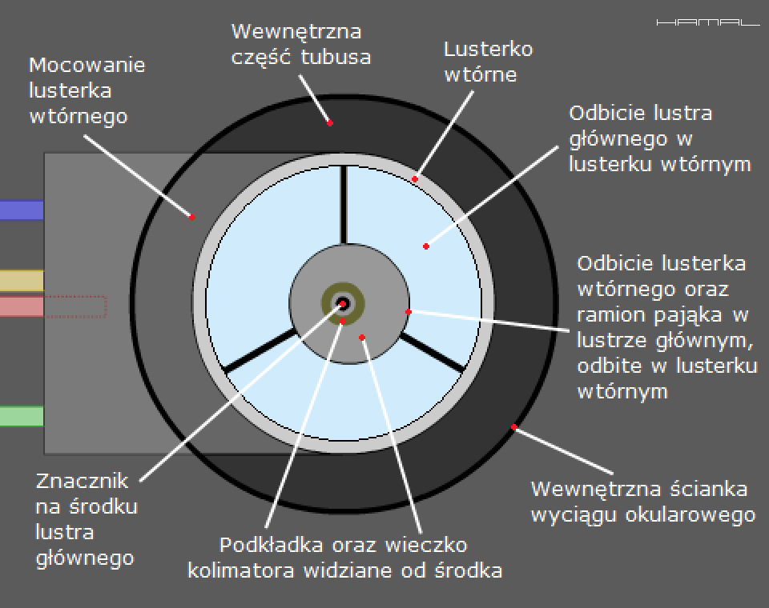
Ale w tym niepozornym obrazku zawartych jest kilka kluczowych zależności, chcąc poprawnie skolimować teleskop, musisz zdawać sobie sprawę z ich istnienia.
A mianowicie...
Odległości pomiędzy brzegiem zwierciadła wtórnego a wewnętrzną ścianką wyciągu powinny być takie same.
7-3
Odległości pomiędzy brzegiem zwierciadła wtórnego a obrysem odbitego w nim zwierciadła głównego powinny być takie same.
7-4
Odległości pomiędzy znacznikiem na zwierciadle głównym a wewnętrzną ścianką wyciągu powinny być takie same.
7-5
Jedynie oznaczone poniżej czerwonymi strzałkami odległości nie muszą być równe i wynikają z tzw. Offset-u, ale na chwilę obecną, nie wnikajmy w ten aspekt, zdobędziesz większe doświadczenie, to zgłębisz temat.
7-6
Gdybyś jednak koniecznie chciał już teraz podpatrzeć co to za licho ten Offset KLIKNIJ Wrócisz w to miejsce przyciskiem WSTECZ przeglądarki.
Jeśli jednak nie zastałeś w kolimatorze powyższych widoków, pora zabrać się do roboty, czytaj, kolimacji :)
Kolimację zaczniemy od zwierciadła wtórnego. Pierwsze rysunki nie zawierają tego, co ono odbija, ponieważ na tym etapie kolimacji nie jest to istotne.
Przedstawione poniżej niedokładności w ustawieniu zwierciadła wtórnego występują zazwyczaj jednocześnie, jednak dla czytelności, rozbijemy je na poszczególne przypadki.
Pierwszy częsty widok przedstawia grafika poniżej. Czarny pierścień to wewnętrzne ścianki naszego wyciągu okularowego. Odległość zaznaczona czerwonymi strzałkami powinna być taka sama.
Jak widać, zwierciadło wtórne jest przesunięte za wysoko względem ścianek wyciągu okularowego (może też być za nisko) a powinno być centralnie. Aby to osiągnąć, w tym przypadku, należy poluzować lekko zieloną śrubę, a dokręcić niebieską. Układ śrub u Ciebie może być inny, a ten przypadek tylko obrazuje problem.
Należy też pamiętać, aby najpierw luzować jedne a dopiero dokręcać inne śruby, nic na siłę, wszystko z wyczuciem.
Rys. 8-1 Zobacz, do czego dążysz.
Inny częsty widok przedstawia grafika poniżej. Co istotne dla tego przypadku, wlot tuby znajduje się z lewej strony a wnętrze tuby ze zwierciadłem głównym z prawej strony.
Jak widać, zwierciadło wtórne jest przesunięte w lewo, jest za płytko w tubie, odległość zaznaczona czerwonymi strzałkami powinna być identyczna. Aby to osiągnąć, należy poluzować śrubę środkową ściągającą - czerwoną, a dokręcać trzy śruby kontrujące - zieloną, żółtą i niebieską. W efekcie naszych działań zwierciadło będzie nam przesuwać się w prawo/głębiej. W przypadku kiedy zwierciadło wtórne jest przesunięte w prawą stronę, czyli jest zbyt głęboko, czynności należy wykonać odwrotnie, analogicznie do sytuacji.
Rys. 8-2 Zobacz, do czego dążysz.
Prawidłowo ustawione zwierciadło wtórne względem ścianek wyciągu okularowego wygląda tak jak poniżej.
8-3
Teraz (poniżej) można zwrócić dokładniejszą uwagę na to, co widać w odbiciu naszego zwierciadła wtórnego. Poniższy widok prezentuje zwierciadło wtórne przekręcone w swojej osi i aby to poprawić, najlepiej bardzo lekko poluzować środkową śrubkę (czerwoną), ale tak, aby nie zwiało nam to, co wcześniej ustawiliśmy, potem złapać mocno w palce korpus zwierciadła wtórnego i delikatnie je obrócić, w tym przypadku w stronę wskazywaną przez strzałkę, lub analogicznie do przypadku.
Rys. 8-4 Zobacz, do czego dążysz.
Tym razem zwierciadło wtórne wraz z mocowaniem jest pochylone do nas, aby to skorygować, należy (odpowiednio kręcąc śrubami kolimacyjnymi) odchylić je od nas.
Rys. 8-5 Zobacz, do czego dążysz.
Tym razem zwierciadło wtórne wraz z mocowaniem jest odchylone od nas, aby to skorygować, należy (odpowiednio kręcąc śrubami kolimacyjnymi) pochylić je do nas.
Rys. 8-6 Zobacz, do czego dążysz.
Jeśli uzyskaliśmy poniższy widok, znaczy to, że wszystko wykonaliśmy prawidłowo i nasze działania przy zwierciadle wtórnym są już zakończone.
Rysunki nie zawierały tego, co odbija się w zwierciadłe głównym, odbitym w zwierciadłe wtórnym, ponieważ na tym etapie kolimacji było to nieistotne.
Teraz możemy się przyjrzeć temu, co widać w odbiciu zwierciadła głównego odbitego w zwierciadle wtórnym (grafika poniżej).
Zobaczymy tam jasne tło nieba, sufit bądź coś innego, zależnie od tego, w co celujemy teleskopem. Na tle tła :) widać naszego pająka i zwierciadło wtórne, najprawdopodobniej przesunięte względem obrysu zwierciadła głównego, oraz kropkę/znacznik centralny na zwierciadle głównym (czarna kropka). Widzimy także od spodu wieczko naszego kolimatora i przyklejoną do niego podkładkę, a w środku podkładki otworek, przez który patrzymy.
9-1 Zobacz, do czego dążysz.
Dla przypomnienia kolimator.
Aby skorygować ujawnione powyżej niedokładności, tym razem będziemy kręcić śrubami celi zwierciadła głównego, pamiętając o zasadach posługiwania się nimi opisanymi na początku. Wykonujemy drobne ruchy śrubami śledząc w kolimatorze, jaki jest efekt. Jeśli podkładka kolimatora i znacznik na zwierciadle głównym w wyniku naszego kręcenia śrubami zbliżają się do siebie, to kontynuujemy poczynania do chwili, gdy znacznik zwierciadła głównego znajdzie się idealnie w środku podkładki, jeśli natomiast się od siebie oddalają, to kręcimy w przeciwną stronę. Jakiś czas będziemy błądzić, a podkładka nie zawsze będzie się zbliżać do kropki :P ale po nabraniu wprawy, zgranie ich będzie trwało chwilę. Jeśli teleskop jest tak duży, że nie damy rady kręcić śrubami i jednocześnie obserwować reakcje (można oczywiście biegać od kolimatora do celi) warto skorzystać z pomocy drugiej osoby, my dowodzimy, a pomocnik kręci śrubkami, aż do uzyskania satysfakcjonującego efektu.
Prawidłowo skolimowany teleskop w kolimatorze wygląda jak poniżej.
9-2
Ale chwilunia... powiesz... przecież tam jest nierówno... jest przesunięte w prawo... tak jak pokazują poniżej strzałki!
Masz rację, ale tak musi być, wszystko jest prawidłowo, ten obrys będzie przesunięty lekko w stronę zwierciadła głównego, jest to normalne zjawisko, ta asymetria wynika z Offset-u KLIKNIJ W razie potrzeby, wrócisz tutaj przyciskiem WSTECZ w przeglądarce
9-3
Na koniec, pamiętaj o tym, że nie wszystkie zwierciadła wtórne pod kątem 45° dają idealny okrąg, nie zawsze zwierciadła wtórne są fabrycznie przyklejone z idealnym Offset-em, tuby drogich teleskopów bywają jajowate a pająki koślawe, nadto, świat realny nie jest idealny, to tylko obrazki zgadzają się co do pixela, więc nie każdy teleskop da się skolimować absolutnie idealnie, i gdy uda Ci się uzyskać przyzwoity wynik, bądź z Siebie dumny, i nie zadręczaj się chwolowo małymi niedokładnościami. Powoli, małymi krokami, głodny nowych emocji, skolimujesz teleskop wzorowo, ale na to trzeba czasu, nie wszystko na raz.
KOLIMACJA TELESKOPU - rozszerzona - dla doświadczonych
Przedstawiony powyżej uproszczony opis kolimacji jest poprawny, daje osobie zupełnie początkującej możliwość oswojenia się z grzebaniem przy optyce własnego teleskopu, jednak, aby dokonać precyzyjniejszej kolimacji, należy grzebnąć w naszym sprzęcie jeszcze głębiej, niestety, to już wymaga większej wiedzy, odwagi, czasu i samozaparcia.
Dział składa się z kilku tematów, kliknij stosowną nazwę, aby zostać przeniesionym do interesującej Cię sekcji.
... światło przemierza kosmos i wpada do teleskopu jako wiązka równoległa, powiedzmy walec, lub np. rura (w przypadku kiedy weźmiemy dwie skrajne wiązki do zobrazowania).
10-1
Trafia taki walec światła na zwierciadło główne, które jest paraboliczne bądź sferyczne, w związku z czym, skupia/ogniskuje światło w jednym miejscu/ognisku, coś jak soczewka na słońcu, gdy jasny punkt jest najmniejszy, to zapala papier, ten punkt, to ognisko. Z walca światła robi nam się stożek.
10-2
Aby zobaczyć obraz w teleskopie, przed okiem mamy okular, tylko że gdy ognisko wypada przed teleskopem, przystawiając tam oko z okularem, głową zasłonimy cały wlot tuby teleskopu, dlatego dodaje się drugie, małe, płaskie zwierciadło, które kieruje nam światło/obraz w bok, do wyciągu okularowego.
10-3
Rzecz w tym, że światło, które wpada do teleskopu jako walec, po dobiciu od wklęsłego skupiającego zwierciadła głównego jest już stożkiem.
Aby odbić pod kątem 90° walec, trzeba centralnie umieszczonego eliptycznego zwierciadła (rysunek poniżej-góra), ale my chcemy odbić/załamać stożek (rysunek poniżej-dół).
Narysujcie sobie dowolny stożek prosty i przetnijcie go linią pod kątem 45°, jedna połowa przecięcia zawsze będzie dłuższa (prawa żółta) od drugiej, w walcu strona prawa (żółta) i lewa (czerwona) będą takie same. Aby objąć zwierciadłem wtórnym cały stożek światła, trzeba je lekko przesunąć, i to właśnie przesunięcie, to nasz rzeczony Offset.
10-4
Poniżej dwa przypadki. Pierwszy teleskop za zwierciadłem wtórnym przesuniętym (jest Offset) i drugi ze zwierciadłem wtórnym zamocowanym symetrycznie (brak Offset-u).
Teleskop za zwierciadłem wtórnym posiadającym niesymetryczne przesunięcie (jest Offset). 10-5
Teleskop ze zwierciadłem wtórnym nie posiadającym niesymetrycznego przesunięcia (brak Offset-u). 10-6
Jak widzimy, brak Offset-u skutkuje tym, iż górą (pomarańczowe kółko) ucieka nam nieprzekierowane do wyciągu okularowego światło, a na dole (żółte kółko) wystaje zbędne niepracujące zwierciadło wtórne.
Co to więc jest Offset? Mówiąc prosto, jest nim niesymetryczne przesuniecie zwierciadła wtórnego wzdłuż jego dłuższej osi względem jego mocowania i osi optycznej zwierciadła głównego.
Dodatkowa przysłona na końcu tulei wyciągu okularowego.
Na niektórych etapach kolimacji, patrząc przez otworek naszego kolimatora, ciężko stwierdzić, czy obiekt w oddali jest, czy nie jest na środku tulei wyciągu okularowego, i wtedy przydałoby się coś, co zawęzi nam pole widzenia. W tym celu sporządzamy z kartonu 1mm przysłonę kołową. Można wykorzystać do tego celu cyrkiel do wycinania kółek, który można nabyć w sklepach papierniczych. Wycinamy z tekturki okrąg o średnicy dopasowanej do tulei naszego wyciągu okularowego, a dokładniej wlotu od strony tuby (grafika poniżej - kolor czerwony). W okręgu wycinamy bardzo dokładnie na samym środku 5-10mm kołowy otworek. To ta przysłona, w połączeniu z naszym kolimatorem otworkowym, zapewni nam dużą dokładność ustawienia optyki, o czym przekonacie się dalej. Są kolimatory w postaci długiej rurki, która na końcu posiada krzyż z drucików, jednak wystarczy ich minimalnie krzywe zakleszczanie w wyciągu okularowym, aby nie spełniały należycie swojego zadania. Przysłona, którą ja proponuję (w duecie z kolimatorem), w sposób bezwzględny centruje nam tuleję wyciągu okularowego.
Na potrzeby opisu, będę ją zwał "czerwoną" przysłoną, mam nadzieję, że to oczywiste, iż ona może mieć dowolny kolor :)
11-1
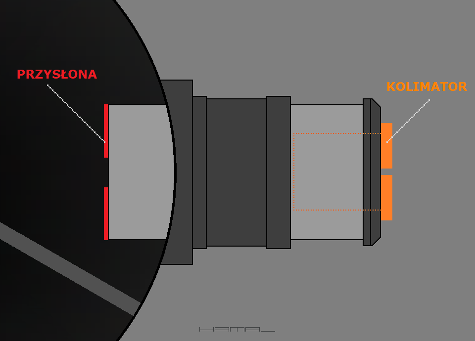
"Czerwona" przysłona osadzona w tulei wyciągu okularowego.
Kolimacja teleskopu - rozszerzona - dla doświadczonych - OPIS
Kolimacji zwierciadła głównego dokonujemy z tubą teleskopu w pozycji pionowej, aby ciężar zwierciadła pracował na naszą korzyść, a nie jak w przypadku pozycji poziomej, wypaczał nasze poczynania, kosząc wszystko w bok.
Kolimacji, demontażu i montażu zwierciadła wtórnego dokonujemy z tubą teleskopu w pozycji poziomej, aby w razie chwili nieuwagi, zwierciadło nie poszybowało nam w dół, wprost na zwierciadło główne. Narzędzia trzymamy pewnie i nie spieszymy się.
Co to więc jest Offset? Mówiąc prosto, jest nim niesymetryczne przesuniecie zwierciadła wtórnego wzdłuż jego dłuższej osi względem jego mocowania i osi optycznej zwierciadła głównego.
Wycentrowanie mocowania zwierciadła wtórnego (tzw. Pająka)
Pająk, czyli umieszczone u wlotu tuby (trójramienne lub czteroramienne) mocowanie zwierciadła wtórnego, często fabrycznie nie jest umieszczony centralnie na środku okrągłej tuby teleskopu, a winien być, i naszym zadaniem na początek, będzie ustawienie tegoż elementu należycie.
Zaczynamy od ostrożnego odkręcenia od pająka zwierciadła wtórnego z oprawą (pająk zostaje). Następnie zwykłym cyrklem biurowym dokonujemy pomiaru odległości od centralnego otworu pająka do ścianek tuby (jasnozielone strzałki), aby się przekonać, czy jest umieszczony centralnie. Jeśli występują różnice odległości, to dokonujemy ich korekty przy pomocy śrub regulacyjnych długości ramion pająka, pamiętając o tym, aby w przypadku miękkiej tuby teleskopu, nie zdeformować jej zbyt mocnym dokręceniem śrub regulacyjnych.
12-1
Co to więc jest Offset? Mówiąc prosto, jest nim niesymetryczne przesuniecie zwierciadła wtórnego wzdłuż jego dłuższej osi względem jego mocowania i osi optycznej zwierciadła głównego.
UWAGA - poniższa metoda znajduje zastosowanie w teleskopach o pełnej tubie/rurze, natomiast w przypadku teleskopów typu Trus i Flex Tube, jedynym sposobem na naprawdę prawidłowe ustawienie wyciągu okularowego jest TA metoda.
Przed przystąpieniem do realizacji opisanych poniżej czynności, warto rozważyć (jeśli posiadana wiedza i doświadczenie pozwolą), opisane TU zagadnienie.
Wyciąg okularowy często fabrycznie nie jest zamontowany prawidłowo, naszym zadaniem teraz, będzie ustawienie tego elementu należycie. Ale co to oznacza "należycie" i w jakim celu to robimy? Aby prawidłowo skolimować teleskop, wyciąg okularowy musi być ustawiony tak, aby jego oś przecinała się z osią optyczną zwierciadła głównego, mało tego, ona winna przecinać się z nią prostopadle. W tym celu za pomocą poniższych czynności postaramy się to osiągnąć.
13-1
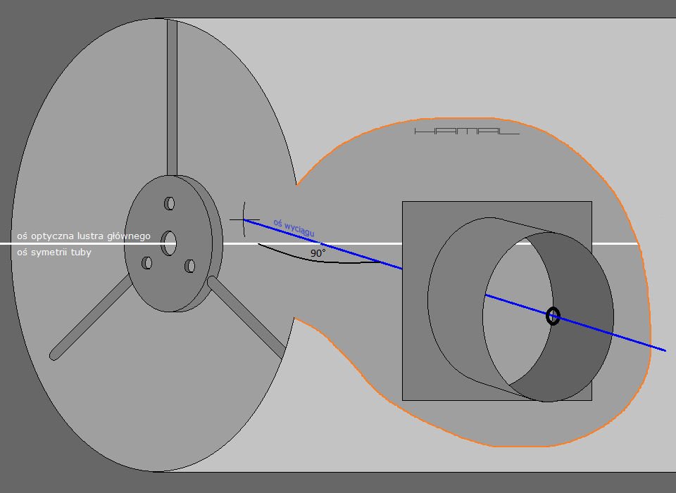
Na początek, potrzebujemy jakiegoś punktu zaczepienia/odniesienia, do którego będziemy mogli nastawiać wyciąg i w tym celu, we wnętrzu tuby, dokładnie po przeciwnej stronie wyciągu okularowego, spróbujemy wyznaczyć punkt, w który wyciąg okularowy swoją osią (nie będąc odchylonym ani w lewo, ani w prawo, ani w dół, ani w górę) powinien/będzie patrzył.
Miejsce umieszczenia znacznika ustalimy dwuetapowo:
1. Należy w tym celu dokonać pomiaru wewnętrznego obwodu tuby, aby wyznaczyć miejsce zetknięcia strzałek x1 i x2 po przeciwnej stronie wyciągu okularowego. Wzorem białej kreski ze strzałkami z grafiki poniżej, paskiem papieru, od wewnętrznej strony tuby, od tulei wyciągu, dookoła wewnątrz, z powrotem do tulei wyciągu, mierzymy obwód. Taki pasek docinamy po kawałeczku, aż idealnie go wpasujemy na długość. Po ostatecznym dobraniu jego wymiaru, wyciągamy go z tuby, miarką dzielimy na dwie równe części, aby wyznaczyć miejsce oznaczone niebieską strzałką, wkładamy ponownie do tuby i już mamy dokładnie przeciwną stronę osi symetrii x wyciągu w tubie, czyli miejsce zetknięcia strzałek x1 i x2. "Zdejmując" wymiar z paska papieru na tubę, oznaczamy tę pozycję na wewnętrznej ściance tuby. Sugeruję, aby nie drapać niczym, ani nie mazać, po farbie wyczerniającej, lepiej w tym miejscu przykleić kawałek np. taśmy malarskiej, lub coś podobnego i dopiero po niej kreślić np. ołówkiem.
Teoretycznie winniśmy mierzyć obwód wewnętrzny tuby od środka tulei wyciągu, ale skoro owa tuleja jest okrągła, a zatem symetryczna, nie ma znaczenia fakt, że pomiar został dokonany od jej zewnętrznych ścianek, tak jest prościej, bo odpada nam problem wyznaczana środka okręgu tulei wyciągu (zetkniecie żółtych strzałek na prawo na rysunku).
13-2
Teraz możemy przytąpić do wyznaczenia wartości y.
2. Należy z obu stron tuby, jakąś miarką, dokonać odmierzenia tej samej odległości (y1 i y2)
Najpierw "zdejmujemy" wymiar y1 od brzegu tuby do środka wyciągu okularowego, a potem odmierzamy tę samą odległość na przeciwnej stronie tuby jako y2 (patrz obrazki poniżej).
13-3
Gdy na obwodzie x1 = x2, a odległość y1 = y2, oznacza to, że krzyżyk do ustawiania wyciągu okularowego mamy umiejscowiony dokładnie po jego przeciwnej stronie.
13-4
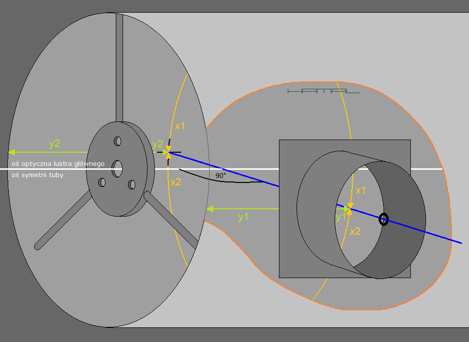
Posiadając znacznik, możemy przystąpić do sprawdzenia, czy wyciąg okularowy jest równo ustawiony. Jeśli jest, to "patrzy się" swoją osią dokładnie na nasz znacznik, jeśli nie, to "gapi" się gdzieś obok.
Instalujemy więc nasz kolimator otworkowy w miejscu mocowania okularów obserwacyjnych w wyciągu i patrzymy, co widać, a widzimy taki widok jak poniżej.
Widok w kolimatorze - Nasz znacznik na przeciwległej ściance naszej tuby. 13-5
Co jest czym. 13-6
Tylko że cholera wie, czy jest on na środku, czy może lekko przesunięty, przydałoby się coś, co zawęzi nam pole widzenia... i w tym celu....
...mocujemy "czerwoną" przysłonę na wyciągu jak poniżej. Jej opis TUTAJ Wrócisz w to miejsce przyciskiem WSTECZ przeglądarki.
13-7
13-8
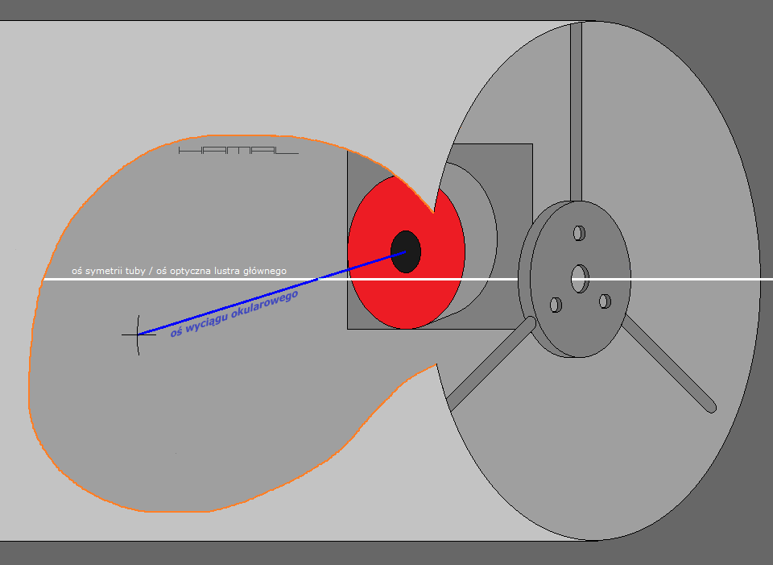
Przysłona założona, patrząc więc przez otworek kolimatora, widzimy tylko mały wycinek (patrz grafika poniżej) wnętrza tuby (zwierciadła wtórnego chwilowo nie ma). Dokładnie na środku tego małego otworka (grafika poniżej) powinien znajdować się nasz znacznik, jeśli tak się dzieje, to mamy równo przymocowany wyciąg okularowy, a jeśli tak się nie dzieje, to mamy nierówno przymocowany wyciąg okularowy :) i musimy wyregulować jego położenie. Gdy posiadamy wyciąg z regulacją przechyłu, regulujemy jego śrubkami regulacyjnymi, gdy nie posiadamy wyciągu z regulacją przechyłu :) jesteśmy zmuszeni radzić sobie jakoś inaczej. Wymaga to odkręcania lub luzowania naszego wyciągu i podkładania pod jego rogi odpowiednich dystansów, aż do uzyskania zgrania kolimatora, otworu przysłony i znacznika na tubie, jak poniżej.
Widok w kolimatorze do jakiego dążymy. 13-9
Co jest czym. 13-10
Po uzyskaniu ww. wyciągamy "czerwoną" przysłonę i tubę ustawiamy PIONOWO.
Teraz wykonamy test potwierdzający, czy jest przecięcie osi wyciągu okularowego i osi zwierciadła głównego.
Do wnętrza tuby, środkowym otworem pająka, do środka do zwierciadła głównego, spuszczamy nitkę z małym ciężarkiem. Ja taki ciężarek podklejam od spodu filcem, dzięki temu mogę go postawić na znaczniku centralnym zwierciadła głównego, nie bojąc się o jego porysowanie, stojąc, nie kołysze się upierdliwie, potem jeszcze tylko lekko napiąć nitkę i można badać, z czym mamy do czynienia. Ponownie patrząc przez kolimator otworkowy umieszczony w wyciągu okularowym, powinniśmy zobaczyć po przeciwnej stronie tubusu, na samym środku znacznik, a na jego środku zwisającą nitkę.
Widok w kolimatorze (tuba ustawiona pionowo). 13-11
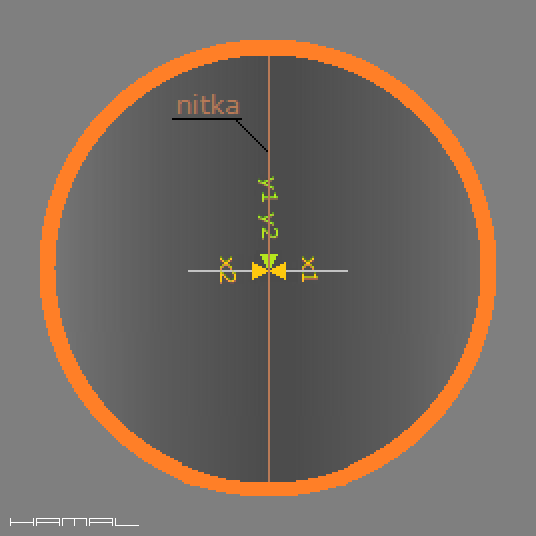
Widok ogólny (tuba ustawiona pionowo). 13-12
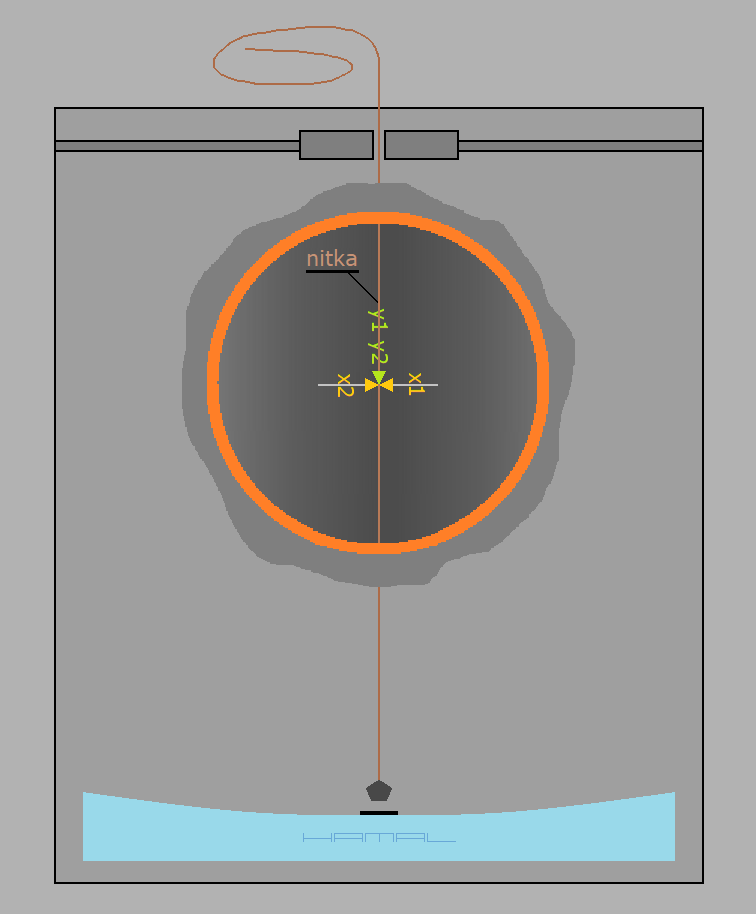
Jeśli nitka będzie przesunięta (patrz obrazek poniżej) oznacza to, że pająk nie jest ustawiony prawidłowo względem osi wyciągu. Teoretycznie, w przypadku gdy nogi pająka mają identyczną długość, a odległość od jego centrum do brzegów tuby jest identyczna na całym obwodzie, wyciąg okularowy jest ustawiony na przeciwległy punkt, to te elementy powinny zgrać się idealnie, jeśli tak nie jest, przyczyną najpewniej jest jakaś deformacja tuby, nasze błędy nowicjusza, lub przypadkowe niedokładności.
Widok w kolimatorze (tuba ustawiona pionowo) błąd zgrania przecięcia osi. 13-13
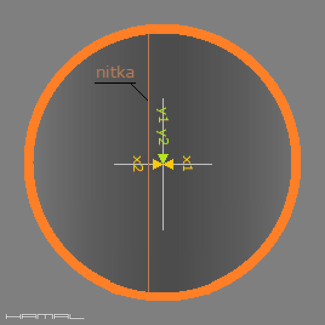
Po prawidłowym ustawieniu pająka i wyciągu okularowego kolej na zwierciadło główne.
Tubę teleskopu ustawiamy w pozycji pionowej, wtedy zwierciadło główne leży nam najrówniej. Obserwując zwierciadło główne przez środkowy otwór pająka (zwierciadła wtórnego nadal nie ma), za pomocą celi ustawiamy zwierciadło główne tak, aby znacznik na jego środku pokrywał się z otworem, przez który patrzymy. Aby widzieć dokładnie otworek, którym patrzymy, względem znacznika na zwierciadle głównym, najlepiej oświetlać od środka małą latarką środkowy pierścień pająka (patrz grafika poniżej).
14-1
Po prawidłowym ustawieniu pająka i wyciągu okularowego kolej na zwierciadło główne.
Tu dopiero robi się ciężko, gdyż zwierciadło wtórne posiada tyle osi swobody, że jego prawidłowe ustawienie stanowi prawdziwe wyzwanie.
-- !!! RYGOR !!! --
Kolimacji teleskopu kolimatorem z otworkiem w zakresie badania:
- obwodu zwierciadła wtórnego w obwodzie wewnętrznym tulei wyciągu
- obrysu zwierciadła głównego w odbiciu w zwierciadłe wtórnym
oraz
Kolimacji teleskopu kamerką
należy BEZWZGLĘDNIE dokonywać w OGNISKU TELESKOPU w przypadku kolimatora jego otworkiem, w przypadku kamerki jej obiektywem.
Jak ustalić gdzie jest ognisko teleskopu, czytaj TUTAJ a dlaczego tak, czytaj TUTAJ
Zaczniemy od tego, iż istnieje w tubie teleskopu pewne miejsce, punkt, w którym krzyżują się oś optyczna zwierciadła głównego i oś wyciągu okularowego. Z założenia obie te osie krzyżują się w tym miejscu idealnie pod kątem prostym i aby było mało, do tego miejsca właśnie zostaje precyzyjnie przytknięte idealnie pod kątem 45 stopni zwierciadło wtórne. Cała nasza jego kolimacja do tego zmierza. Miejsce to, na poniższych obrazkach, zostało oznaczone niebieskim punktem.
15-1
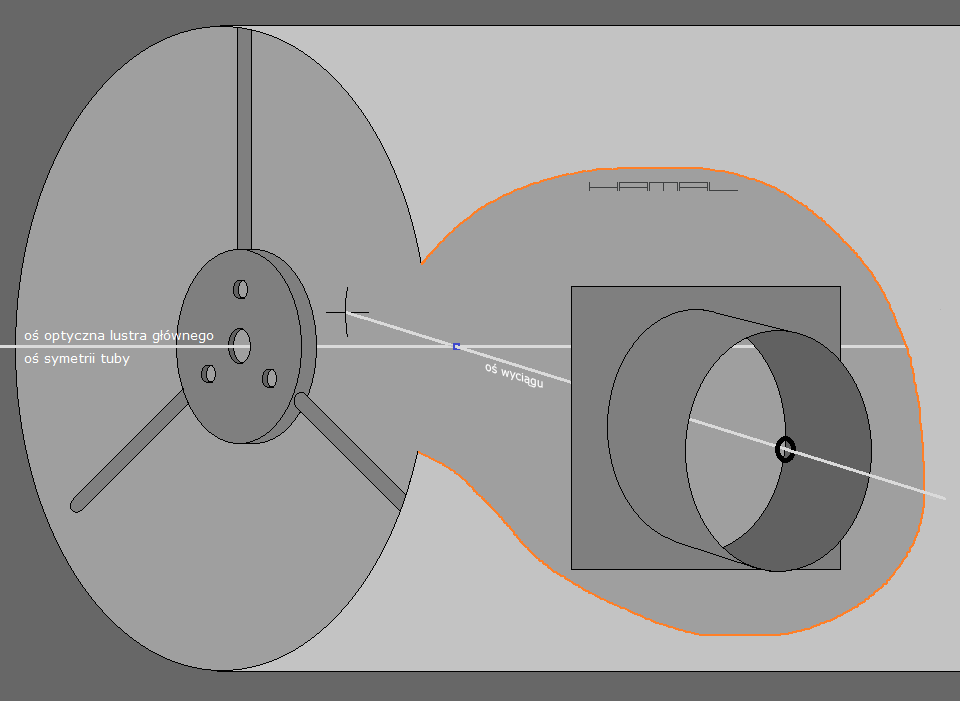
Rzeczone miejsce oznaczne niebieską kropką.
15-2
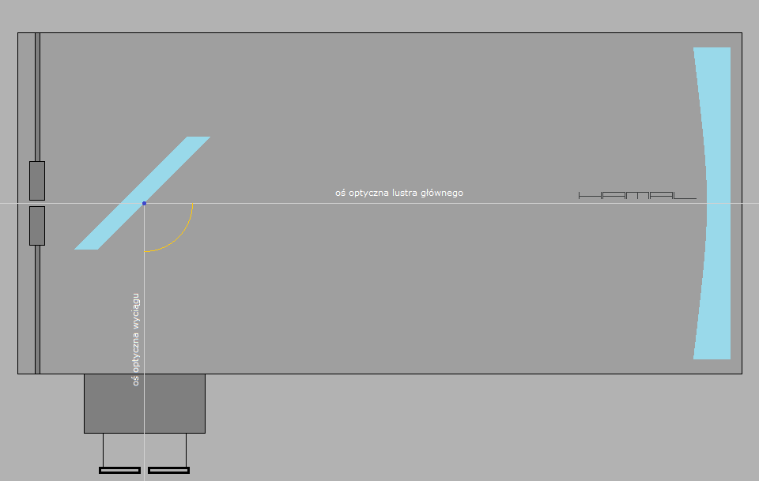
Nas w tym momencie interesuje tylko znacznik na zwierciadle głównym i podkładka kolimatora, one poprowadzą nam całą resztę, nie interesują nas obrysy, zarysy i odstępy, bo jeśli zwierciadło wtórne nie ma prawidłowego Offsetu, to jego kolimacją tego nie poprawimy, nie naciągniemy. Zobaczymy, co nam wyjdzie, a jak nam nie wyjdzie, będziemy się zastanawiać potem.
Przystępujemy do ostrożnego zamontowania zwierciadła wtórnego do pająka. Teraz patrząc przez sam kolimator (bez "czerwonej" przysłony w wyciągu) zwierciadło wtórne regulujemy tak, aby, było ono na środku tulei wyciągu, a znacznik zwierciadła głównego pokrywał się z podkładką w kolimatorze jak najdokładniej. Zakładamy ponownie przysłonę kołową i teraz dopiero ujawni się niedokładność w pozycji zwierciadła wtórnego lub poprawność jego ustawienia. Najczęściej występuje zła głębokość jego osadzenia, należy dokonywać korekt, w międzyczasie zdejmując i zakładając "czerwoną" przysłonę, do chwili uzyskania widoku jak w poniższej "Sytuacji 1".
Widok w kolimatorze otworkowym z założoną dodatkowo przysłoną na końcu wyciągu.
16-1 | wszystko równo i symetrycznie względem siebie. .
16-2 | sytuacja w teleskopie - perfekt .
16-3 | zbliżenie - perfekt .FFF
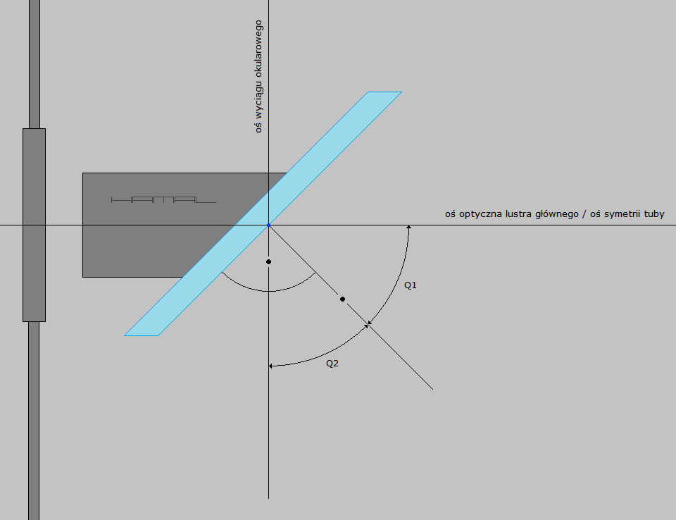
Zalecenie? Przejdź TU Wrócisz w to miejsce przyciskiem WSTECZ przeglądarki.
Sytuacja 2 - nie jest dobrze, nie mamy idealnie :(
Widok w kolimatorze otworkowym z założoną dodatkowo "czerwoną" przysłoną na końcu wyciągu.
17-1 | zgrane ze sobą znacznik na zwierciadle głównym i podkładka kolimatora nie są centralnie w otworze, są przesunięte w stronę zwierciadła głównego (prawo) .
17-2 | sytuacja w teleskopie - punkt styku osi wypada nam wewnątrz zwierciadła wtórnego .
17-3 | zbliżenie - zwierciadło wtórne wpuszczone jest zbyt głęboko, a widok w kolimatorze spowodowany jest tym, że ... .
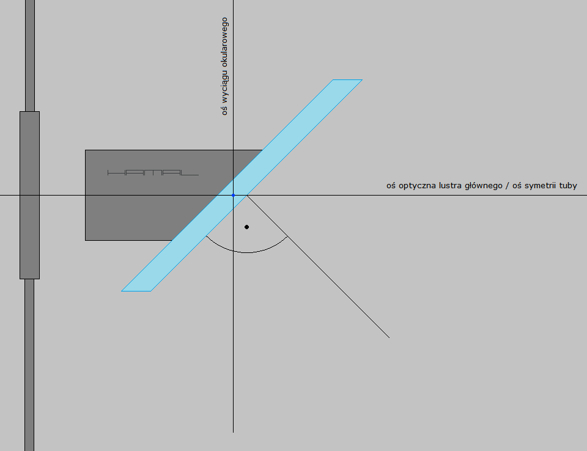
17-4 | ... zamiast zrobić jak poniżej (wycofać trochę zwierciadło wtórne) ... .
... zacząłeś przechylać je na boki, aż do zgrania znaczników, ale efekt jest jak poniżej ...
17-5 | ... kąty Q1 i Q2 są identyczne, kąt odbicia = się kątowi padania, znaczniki się zgrały, ale nie na tej głębokości co należy. .
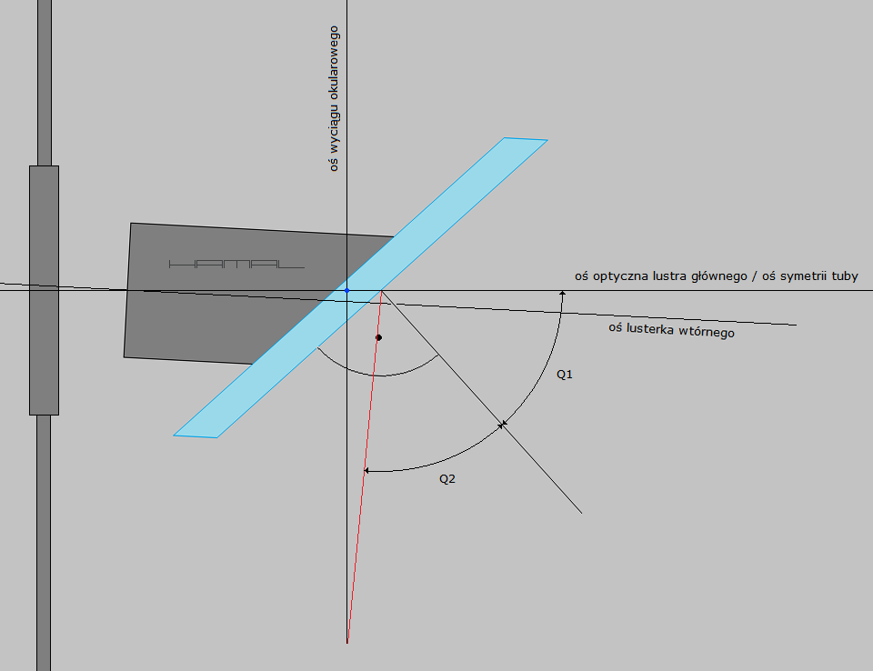
17-6 | Przypomnienie widoku w kolimatorze. .
Zalecenie? Wycofaj trochę zwierciadło wtórne.
Sytuacja 3 - nie jest dobrze, nie mamy idealnie :(
Widok w kolimatorze otworkowym z założoną dodatkowo "czerwoną" przysłoną na końcu wyciągu.
18-1 | zgrane ze sobą znacznik na zwierciadle głównym i podkładka kolimatora nie są centralnie w otworze, są przesunięte w stronę wlotu tuby (lewo). .
18-2 | sytuacja w teleskopie - punkt styku osi wypada nam przed zwierciadłem wtórnym .
18-3 | zbliżenie - zwierciadło wtórne wpuszczone jest zbyt płytko, a widok w kolimatorze spowodowany jest tym, że ... .
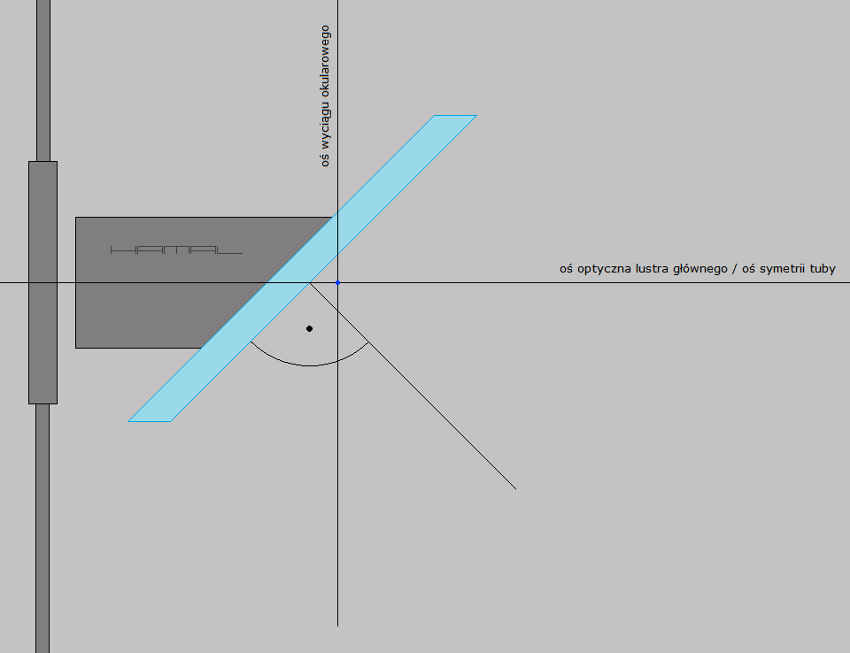
18-4 | ... zamiast zrobić jak poniżej (wpuścić trochę głębiej zwierciadło wtórne) ... .
... zacząłeś przechylać je na boki, aż do zgrania znaczników, ale efekt jest jak poniżej ...
18-5 | ... kąty Q1 i Q2 są identyczne, kąt odbicia = się kątowi padania, znaczniki się zgrały, ale nie na tej głębokości co należy. .
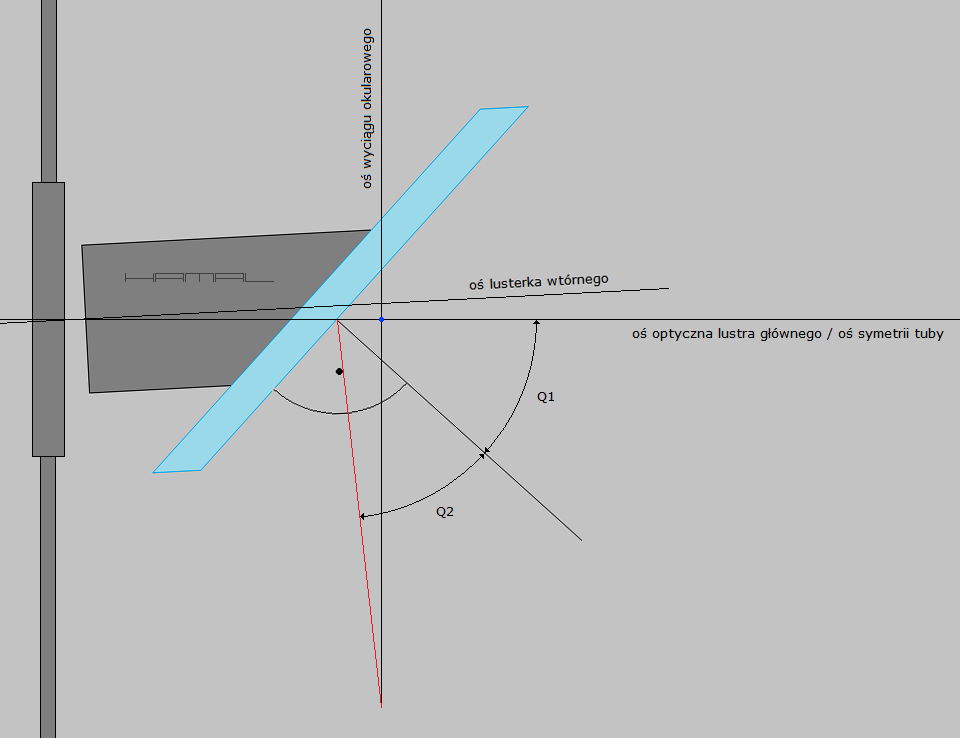
Sytuacja 4 - nie jest dobrze, nie mamy idealnie :(
Widok w kolimatorze otworkowym z założoną dodatkowo "czerwoną" przysłoną na końcu wyciągu.
19-1 | zgrane ze sobą znacznik na zwierciadle głównym i podkładka kolimatora nie są centralnie w otworze, są przesunięte w górę. .
19-2 | Sytuacja w teleskopie - oś wyciągu okularowego nie krzyżuje się z osią zwierciadła głównego, lecz przechodzi pod nią. .
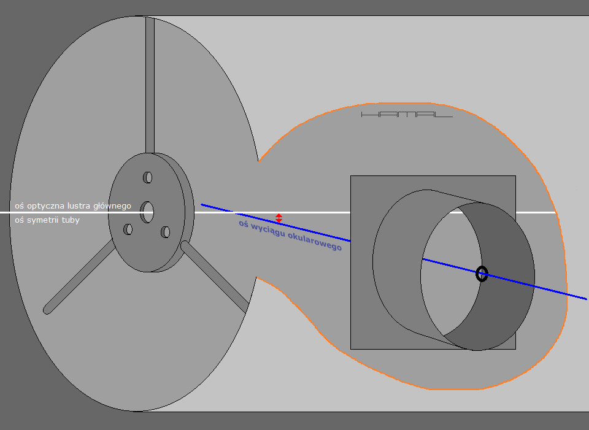
Możliwe przyczyny?
1 - Pająk nie jest idealnie wycentrowany w tubie.
2 - Nie ustawiłeś wyciągu okularowego tak dokładnie, jak Ci się wydaje.
3 - Oś zwierciadła głównego nie wychodzi dokładnie środkowym otworem pająka.
Sytuacja 5 - nie jest dobrze, nie mamy idealnie :(
Widok w kolimatorze otworkowym z założoną dodatkowo "czerwoną" przysłoną na końcu wyciągu.
20-1 | zgrane ze sobą znacznik na zwierciadle głównym i podkładka kolimatora nie są centralnie w otworze, są przesunięte w dół. .
20-2 | Sytuacja w teleskopie - oś wyciągu okularowego nie krzyżuje się z osią zwierciadła głównego, lecz przechodzi nad nią. .
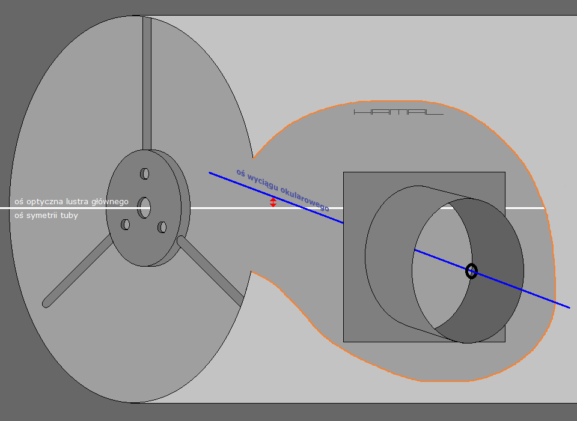
Możliwe przyczyny?
1 - Pająk nie jest idealnie wycentrowany w tubie.
2 - Nie ustawiłeś wyciągu okularowego tak dokładnie, jak Ci się wydaje.
3 - Oś zwierciadła głównego nie wychodzi dokładnie środkowym otworem pająka.
Teraz możemy przyjrzeć się temu co może być widać w zwierciadle wtórnym w Sytuacji 1-szej, ale bez "czerwonej" przysłony ograniczającej nam pole widzenia.
jednak pierwej...
- ! RYGOR ! -
Poniższe badanie należy BEZWZGLĘDNIE dokonywać otworkiem umiejscowionym w OGNISKU TELESKOPU.
Jak ustalić gdzie jest ognisko teleskopu, czytaj TUTAJ | Dlaczego tak, czytaj TUTAJ
-- Już bez "czerwonej" przysłony badamy zarysy i obrysy --
Sytuacja 6 kontynuacja Sytuacji 1 - wszystko jest super, mamy prze-idealnie, nie dość, że wszystko zgrane jak w sytuacji 1 to dodatkowo po wyjęciu "czerwonej" przysłony, okazało się, że obrys zwierciadła głównego w zwierciadle wtórnym jest idealny, a obrys zwierciadła wtórnego jest idealny w obrysie tuby wyciągu okularowego, to oznacza, że mamy idealny Offset.
21-1 | Widok w kolimatorze z "czerwoną" przysłoną - perfekt .
21-2 | Widok w kolimatorze bez "czerwonej" przysłony - perfekt | Pamiętaj o wyżej opisanym RYGORZE | .
21-3 | Sytuacja w teleskopie - wszystko prawidłowo .
21-4 | Widok w kolimatorze - Ta jedyna niesymetria to opisany Ci już powyżej Offset, wszystko jest OK. | Pamiętaj o wyżej opisanym RYGORZE | .
Sytuacja 7 kontynuacja Sytuacji 1 - zdaje się idealnie, wszystko zgrane jak w sytuacji 1 a po wyjęciu "czerwonej" przysłony, okazało się, że obrys zwierciadła głównego w zwierciadle wtórnym nie jest idealny, a to oznacza, że najpewniej nie mamy idealnego Offset-u.
22-1 | Widok w kolimatorze z "czerwoną" przysłoną - perfekt .
| Pamiętaj o wyżej opisanym RYGORZE | 22-2 | Widok w kolimatorze bez "czerwonej" przysłony - mniej idealny, jak widać, zwierciadło wtórne nie obejmuje swoim obrysem równomiernie zwierciadła głównego. .
22-3 | Widok w kolimatorze - jak widzimy, kolimacyjnie wszystko jest jak należy. | Pamiętaj o wyżej opisanym RYGORZE | .
22-4 | Sytuacja w teleskopie - ale zwierciadło wtórne nie jest przyklejone odpowiednio. .
Co można z tym zrobić? Jak już pisałem wcześniej, gdy zwierciadło wtórne nie posiada prawidłowego Offset-u, to w procesie jego kolimacji tego się nie poprawi, ani nie naciągnie, trzeba oderwać zwierciadło wtórne od mocowania i przykleić je prawidłowo, niestety. Ale... Wasz teleskop będzie dawał poprawne obrazy, chyba że powyższa niedokładność jest naprawdę spora, lub profesjonalnie zajmujecie się astrofotografią, wtedy warto rozważyć operacje przeklejenia.
Ale... jeszcze jedno... w świecie rzeczywistym nic nie jest idealne, wiele opisanych powyżej czynności nie wykonaliście co do 0,01mm, wszelkie niedokładności, podobnie wyżej opisana, mogą mieć inną naturę, niż Wam się w tej chwili wydaje, zadręczanie się więc myślami, czy porywać się na przeklejanie zwierciadła wtórnego, czy nie, lepiej przekujcie na zapał na kolejne i kolejne powtórne kolimacje, jeśli nadal, mimo zdobytego doświadczenia, uparcie będziecie uzyskiwać identyczne wady, dopiero wtedy warto rozważyć ich precyzyjne niwelowanie.
I na koniec. Teleskop jest w tej chwili skolimowany prawidłowo, ale przy większych teleskopach zwierciadło główne, zależnie od jakości celi, może lekko pływać w zależności od kąta przechylenia teleskopu, więc jeśli fotografujemy obiekty raz w zenicie, a raz tuż nad horyzontem, powinniśmy każdorazowo sprawdzić poprawność kolimacji, lecz tym razem, już samym kolimatorem z otworkiem i w przypadku wystąpienia pewnych niedokładności, korekt dokonywać już tylko zwierciadłem głównym, gdyż to właśnie ono jest ich przyczyną. Pomijam sytuację lichych konstrukcji, w których pływa i zwierciadło wtórne, ale bardzo dokładna kolimacja takich teleskopów mija się z celem.
Czyli o tym, jak nie dać się oszukać off-set-owi robiąc testy Newtona na gwiazdach :)
Budowa teleskopu klasycznego systemu Newtona wymaga, aby na wprost zwierciadła głównego, u wlotu tuby teleskopu, na jakimś mocowaniu, było osadzone dodatkowe zwierciadło wtórne, które skieruje nam obraz w bok do wyciągu okularowego. Niestety, taka konstrukcja sprawia, że część zwierciadła głównego zostanie przesłonięta przez owo mocowanie i zwierciadło, co na widzianym przez nas obrysie zwierciadła głównego wygeneruje specyficzny wzór.
23-1 | Tak wygląda obraz zwierciadła głównego, gdy przed nim nie znajduje się żadna przeszkoda. .
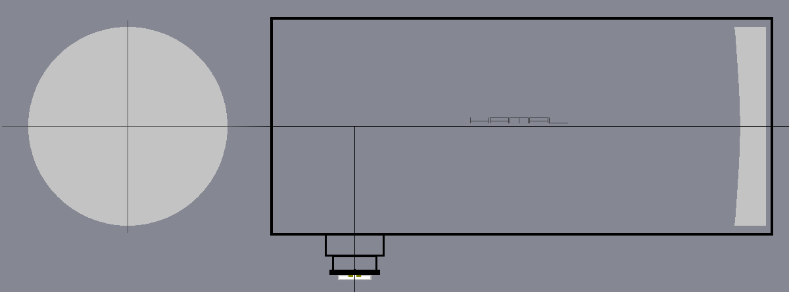
Zbliżenie.
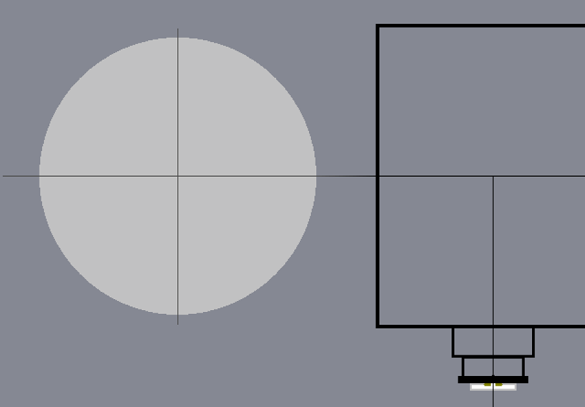
23-2 | Tak wygląda obraz zwierciadła głównego, gdy w tubie znajduje się jedynie tzw. Pająk, czyli klasyczne trójramienne mocowanie zwierciadła wtórnego. .
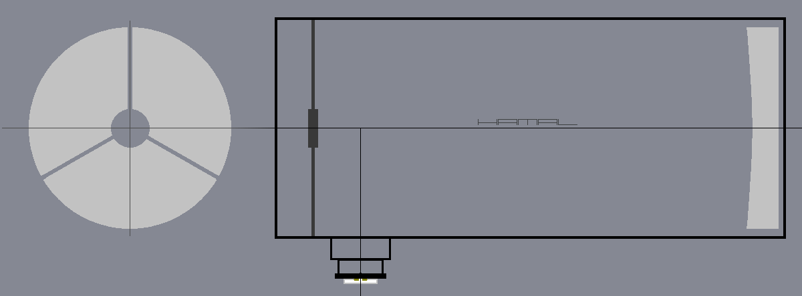
Zbliżenie.
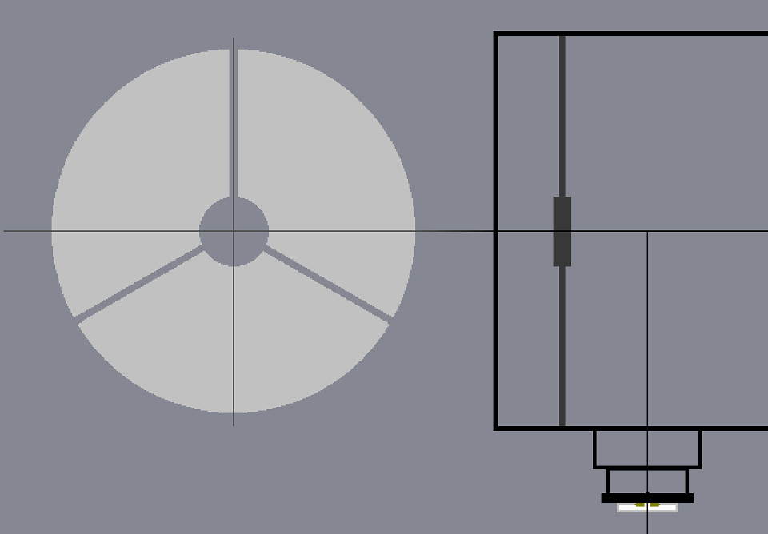
23-3 | Tak wygląda obraz zwierciadła głównego, gdy w tubie znajduje się tzw. Pająk, czyli klasyczne trójramienne mocowanie zwierciadła wtórnego z zamontowanym na nim zwierciadłem wtórnym nieposiadającym tzw. off-set-u. .
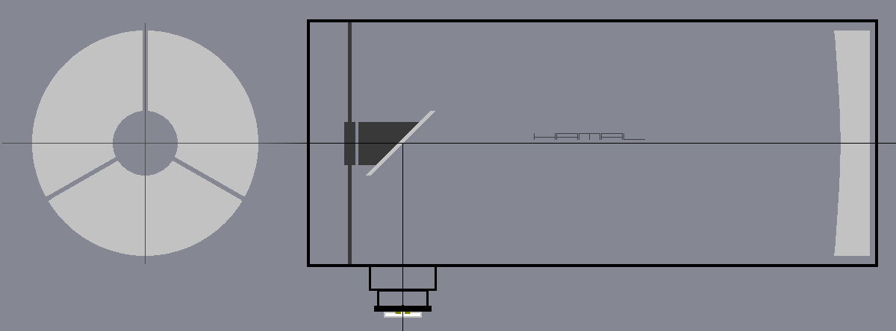
Zbliżenie.
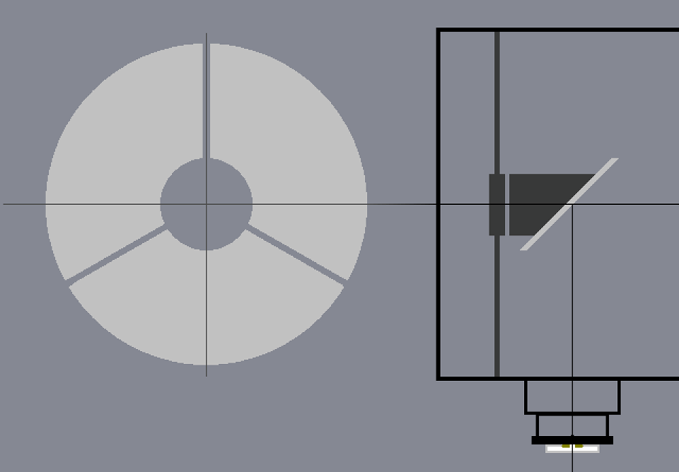
23-4 | Tak wygląda obraz zwierciadła głównego, gdy w tubie znajduje się tzw. Pająk, czyli klasyczne trójramienne mocowanie zwierciadła wtórnego z zamontowanym na nim zwierciadłem wtórnym posiadającym tzw. off-set. .
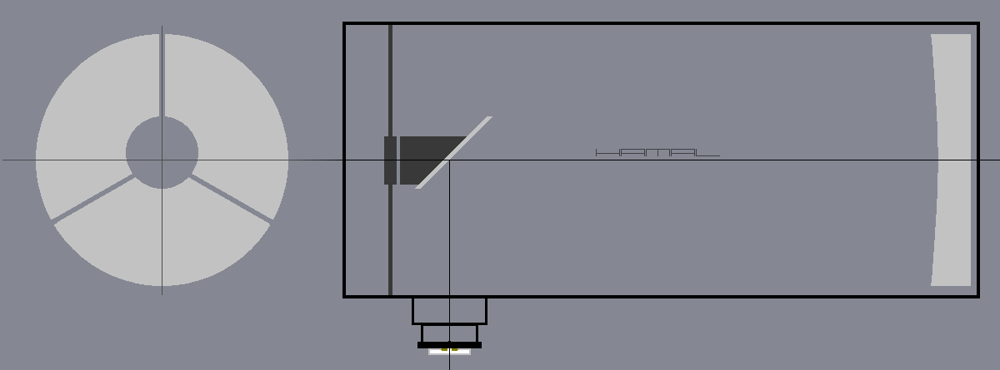
Zbliżenie.
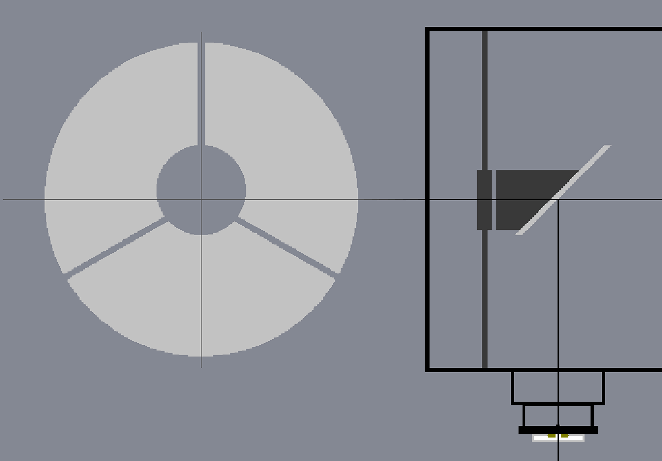
I tu zmierzamy do clou naszego zagadnienia, obstrukcji centralnej, ale nie jakieś tam dowolnej, lecz symetrycznej :)
Jak pewnie zauważyliście, obraz obstrukcji z zastosowaniem zwierciadła wtórnego posiadającego tzw. off-set nie jest symetryczny, co może w procesie kolimacji powodować pewne przekłamania w interpretacji jej poprawności, dlatego też w Newtonach z off-set-em, przynajmniej na czas kolimacji, warto na tulei centralnej Pająka instalować dodatkową przysłonę, o takiej średnicy, aby patrząc w osi teleskopu, zwierciadło wtórne nie wystawało poza jej obrys (patrz grafika poniżej). Zastosowanie takiego tricku pozwoli nam wygenerować symetryczną obstrukcję zwierciadła głównego, co umożliwi nam interpretację jakości kolimacji przy testach na gwiazdach.
Czy pierścień generujący symetryczną obstrukcję centralną warto pozostawić na stałe?
Moim zdaniem nie, bo choć z faktu posiadania symetrycznej obstrukcji centralnej płyną pewne korzyści optyczne, to z doświadczenia wiem, że zwiększenie w ten sposób powierzchni obstrukcji wpływa negatywnie na obraz w stopniu znaczniejszym, niż brak posiadania symetrycznej obstrukcji centralnej.
Kolimacja wykonana, wszystko jest idealnie, jednak nie daje Wam spokoju jeden szczegół, mianowicie, dziwna asymetria wyciągu okularowego (patrz przykładowe zdjęcia poniżej). Zachodzi wątpliwość, czy z uwagi na wystąpienie takiego zjawiska kolimacja na pewno jest prawidłowa.
Widok z przodu - ruchoma tuleja wyciągu okularowego jest za nisko. . 24-1
Widok z przodu - ruchoma tuleja wyciągu okularowego jest za wysoko. . 24-2
Widok z przodu - ruchoma tuleja wyciągu okularowego jest przesunięta w lewo. . 24-3
Widok z przodu - ruchoma tuleja wyciągu okularowego jest przesunięta w prawo. . 24-4
Widok z boku - krzywo . 24-5
Widok z góry - krzywo . 24-6
A przecież powinno być tak!
Widok z przodu - równo . 24-7
Oraz tak!
Widok z boku - równo . 24-8
Oraz tak!
Widok z góry - równo . 24-9
Wiele wyciągów okularowych jest tak zaprojektowanych, że pewna asymetria jest wpisana w ich budowę, producent, planując tor poruszania się ruchomej tulei wyciągu, nie skupiał się na tym, aby u wylotu korpusu elementy były ze sobą w idealnych odstępach, jedyne co absorbowało projektanta, to fakt, aby jedno nie ocierało o drugie, aby zachować jakieś szczeliny, ale niekoniecznie równiutkie na całym obwodzie.
Spróbuję Wam to wytłumaczyć za pomocą grafiki.
W opisie udział biorą:
Korpus wyciągu okularowego oraz oś symetrii. . 24-10
Tuleja ruchoma wyciągu okularowego (Drawtube) oraz oś symetrii. . 24-11
Stożek światła oraz oś optyczna. . 24-12
Wszystkie elementy zestawione razem w idealną symetryczną całość wyglądają tak. . 24-13
Wszyscy oczekujemy, że ruchoma tuleja będzie umieszczona symetrycznie względem korpusu wyciągu okularowego. . 24-14
Jednak istnieją tańsze modele wyciągów okularowych Crayford-a, w których nieregulowany górny wózek jezdny nie gwarantuje pożądanej symetrii. . 24-15
Można oczywiście zaaplikować odpowiednią podkładkę i uzyskać poniższy efekt. . 24-16
Ale co w takim przypadku? . 24-17
Są także wyciągi okularowe posiadające poślizg na paskach teflonu od początku zaprojektowane "z poważaniem" opisywanego tu problemu. . 24-18
Istnieją też przypadki, gdy posiadana asymetria jest wynikiem naszej regulacji i mamy na nią wpływ. . 24-19
Aby było jeszcze trudniej, bywają też takie asymetrie. . 24-20
Można oczywiście wyregulować tuleję to pozycji symetrycznej... . 24-21
...ale czy nadal będzie spełniony wymóg jej odpowiedniego ustawienia względem osi optycznej teleskopu? . 24-22
Bo co jeśli taka krzywizna... . 24-23
...rekompensuje nam krzywy tubus... . 24-24
... i tak naprawdę ustawia nam prawidłowo ruchomą tuleję wyciągu okularowego względem osi optycznej teleskopu, to walka z nią sprawi, że rozwalimy kolimację. . 24-25
W tym momencie musimy rozważyć jedną podstawową kwestię, czy rzeczona asymetria jest nam niezbędna, czy tylko jako zastana, przemknęła przez proces kolimacyjny, bo nie została dostrzeżona na samym początku.
Jak widzicie, zagadnienie jest bardziej złożone, niż tylko samo ujawnienie i zlikwidowanie rzeczonej asymetrii.
-- Najoptymalniej proces winien wyglądać tak, że najpierw ogarniamy opisane tu kwestie, a dopiero potem bierzemy się za jakąkolwiek kolimację teleskopu.
-- Nigdy proces nie winien wyglądać tak, że najpierw bierzemy się za kolimację teleskopu, a dopiero potem ogarniamy opisane tu kwestie... z wyłączeniem sytuacji gdy... opisane tu kwestie są wynikiem dążenia do idealnej kolimacji.
Ale...
Jeśli ruchoma tuleja wyciągu okularowego jest odpowiednio usytuowana względem osi optycznej i stożka światła teleskopu... . 24-26
... jeśli porusza się względem nich w odpowiedni poniższy sposób... . 24-27
... i elementy krytyczne w obrębie opisywanego tu zagadnienia są spełnione...
... to nikt nie ma uwag do tego, jakie wygibasy przyjmuje korpus wyciągu, aby zapewnić ruchomej tulei pożądaną pracę. . 24-28
To, w jaki sposób ruchoma tuleja wyciągu układa się względem jego korpusu, zależy od tego, jak jest podparta przez elementy ją prowadzące. W różnych wyciągach jest to realizowane w różny sposób, ale oczywiste jest, że gdy w ramach regulacji zmieniamy położenie łożysk i tulei stanowiących tor, po którym się ona toczy, wpływamy na jej płożenie oraz odchylenie względem korpusu. Jednak, w procesie kolimacji, to ruchoma tuleja jest naszym punktem odniesienia, korpus wyciągu stanowi jedynie dodatek, za pomocą którego montujemy go do tuby teleskopu, bo niezależnie od powyginania tuby i tego, jak krzywo jest ustawiony korpus wyciągu, oś ruchomej tulei wyciągu winna być idealnie dostrojona do osi optycznej teleskopu, a brak symetrii tulei wyciągu względem jego korpusu o niczym nie przesądza.
Tubusy teleskopów często posiadają różne asymetrie, co znacząco utrudnia nam zadanie w zakresie prawidłowego ustawienia wyciągu okularowego, dlatego wszystkie teoretyczne rozważania, idealnie symetryczne grafiki, nie znajdują odzwierciedlenia w rzeczywistości.
. 24-29
W procesie kolimacji, próbując spełnić zadane wymagania, musimy sobie jakoś radzić.
Jeśli nie posiadamy regulowanego wyciągu okularowego, skończy się to jakąś podkładką w odpowiednim miejscu między korpusem wyciągu a tubusem teleskopu. . 24-30
Jeśli posiadamy wyciąg okularowy z regulacją, ustawimy go odpowiednio. . 24-31
A czasem skończy się to nawet tak. . 24-32
Jak więc widzicie, temat jest złożony i wiele dróg prowadzi do celu, nic nie wyklucza poprawności kolimacji, nawet opisane tu asymetrie i tylko od głębszej oceny zależy, czy asymetrie są konieczne lub przemknęły niezauważone i są do usunięcia, ale to oznacza powtórzenie procesu kolimacji od nowa, już na skorygowanym wyciągu okularowym.